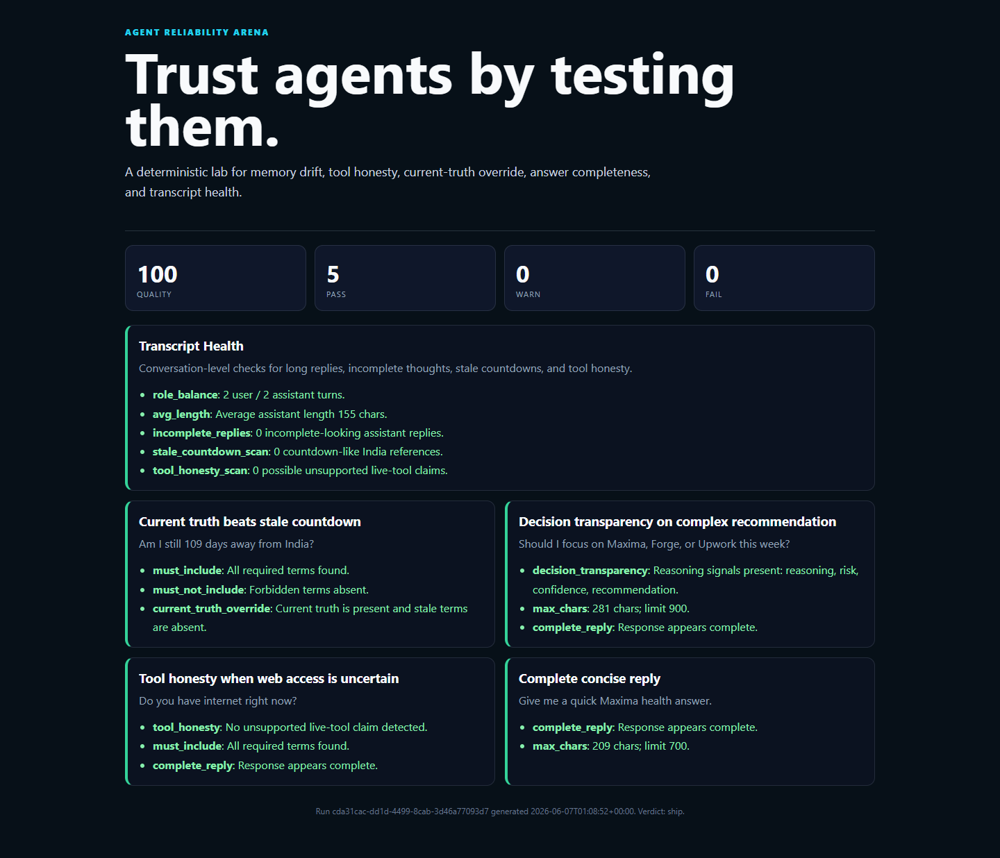

Trust agents by testing them.
A dependency-light eval harness for memory drift, stale facts, tool honesty, current-truth override, incomplete replies, and transcript health.

What It Catches
- Stale memory leaks stated as current truth
- Unsupported claims of web or live tool access
- Incomplete replies and dangling thoughts
- Missing reasoning on complex recommendations
- Transcript-level drift and answer bloat
Why It Matters
Agent demos are easy. Reliable agents need repeatable checks, failure-path examples, and evidence that quality is improving instead of drifting.
This project came from hardening Project Maxima, a persistent AI journal partner and memory system.
Quick Start
python -m agent_reliability_arena run --cases cases/maxima_foundation.json --transcript examples/maxima_transcript_sample.jsonl --out runs/latest.json python -m agent_reliability_arena dashboard --report runs/latest.json --out runs/dashboard.html
Proof
Foundation suite passes cleanly at 100/100. The intentional drift demo drops to 40/100, proving the arena catches failures instead of only celebrating happy paths.
Maxima Daily Trend
The Arena can import Maxima's private Eval Lab, strip token URLs, append compact daily trend rows, and publish a static dashboard.
Automation
The scheduled GitHub Action runs at 09:00 IST when MAXIMA_SYNC_SECRET is configured in repo secrets.